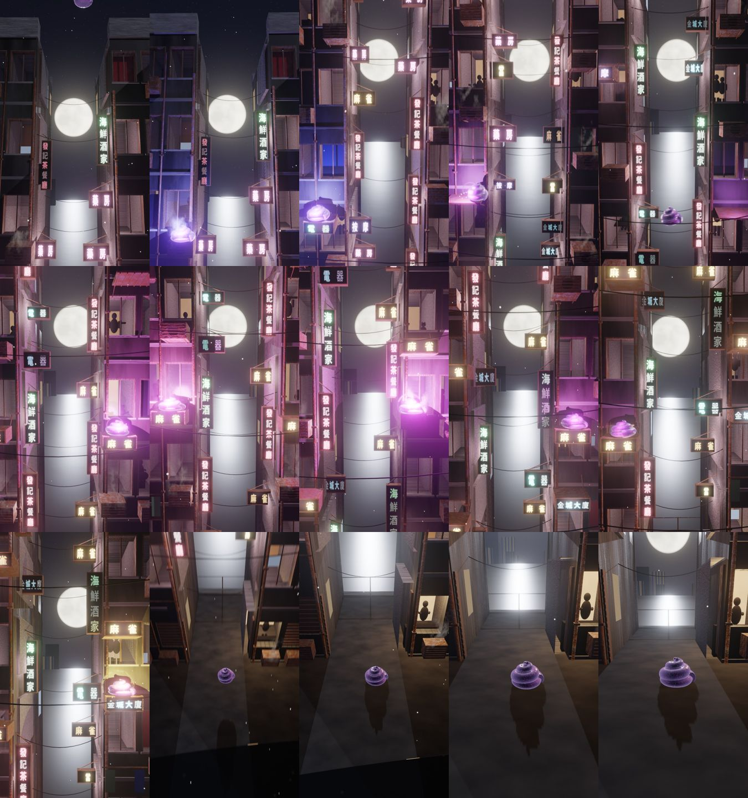
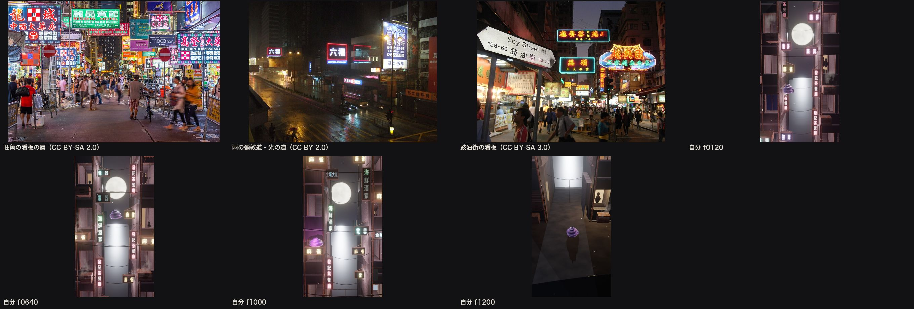

| 確認項目 | 結果 |
|---|---|
| 曲の分解（status/uchu_unko/v4/kyoku_bunkai.md）を書いてから軌道を設計した | フレーズA〜G・強弱・溜め・rit.・フェルマータ |
| 等間隔の跳ねをやめた | 間隔 [52,52,52,52,26×8,104,20,6,78,52,39,13,20,6,26,52,111,66,36,70] |
| うんこ・カメラのめり込み | 0件（michi_tenken.json） |
| ケツロゴ＝たまごさんのエンドカード | jrs_logo_endcard.png（ドライブ SNS/TikTok投稿用） |
| 80点に届いたか | 届いていない（68点）。負けている所①奥の港の水が白い板 ②看板の繰り返し・色が単調 ③店先の暖かい光が無い。①②は v4c で直し中 |